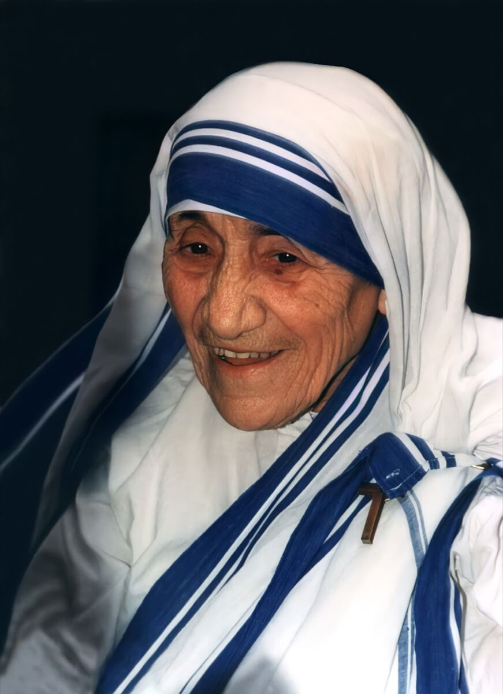
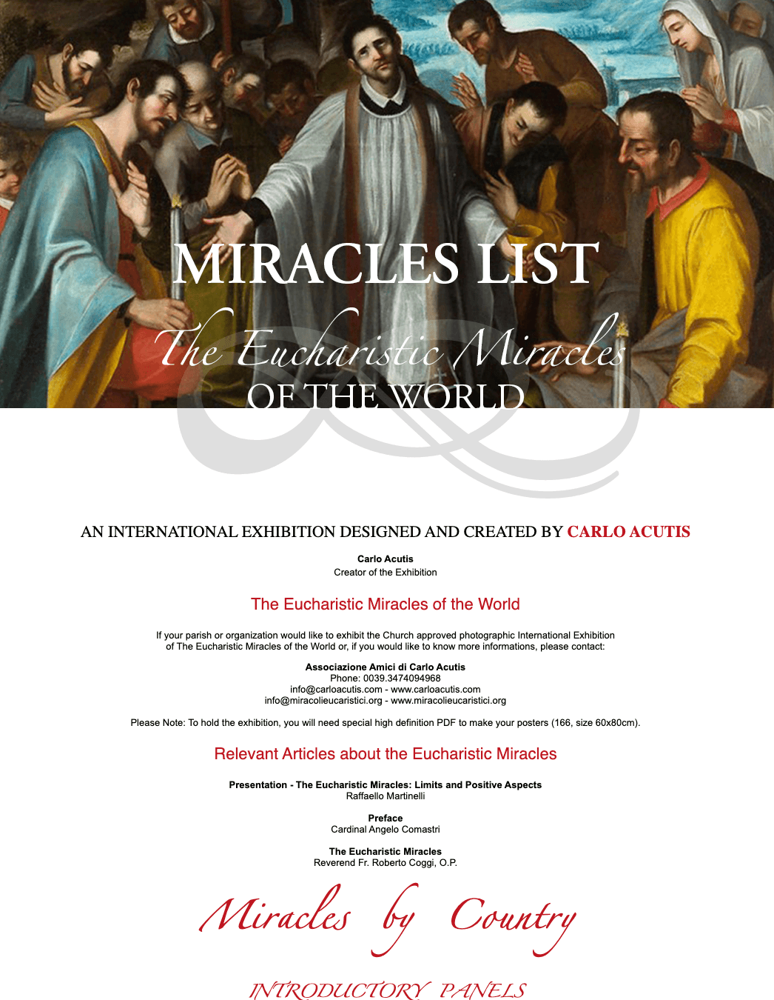
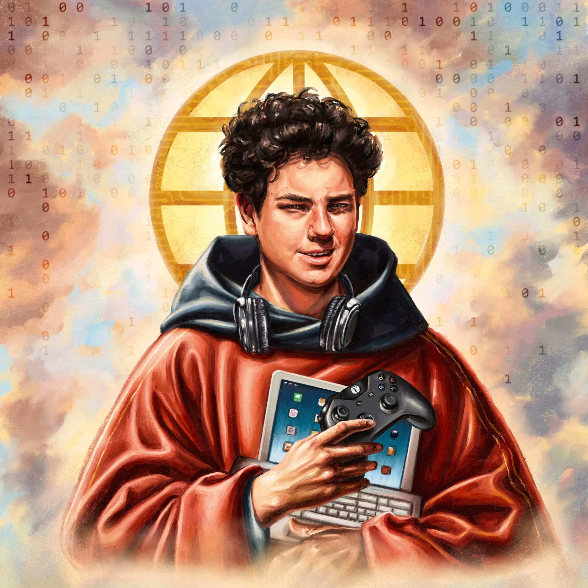
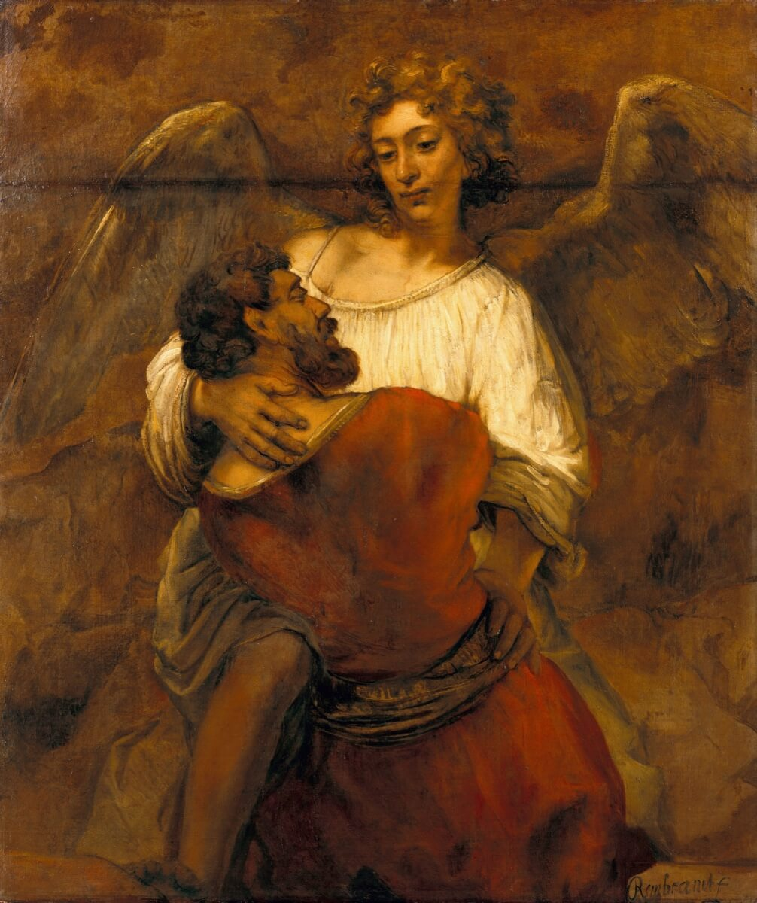
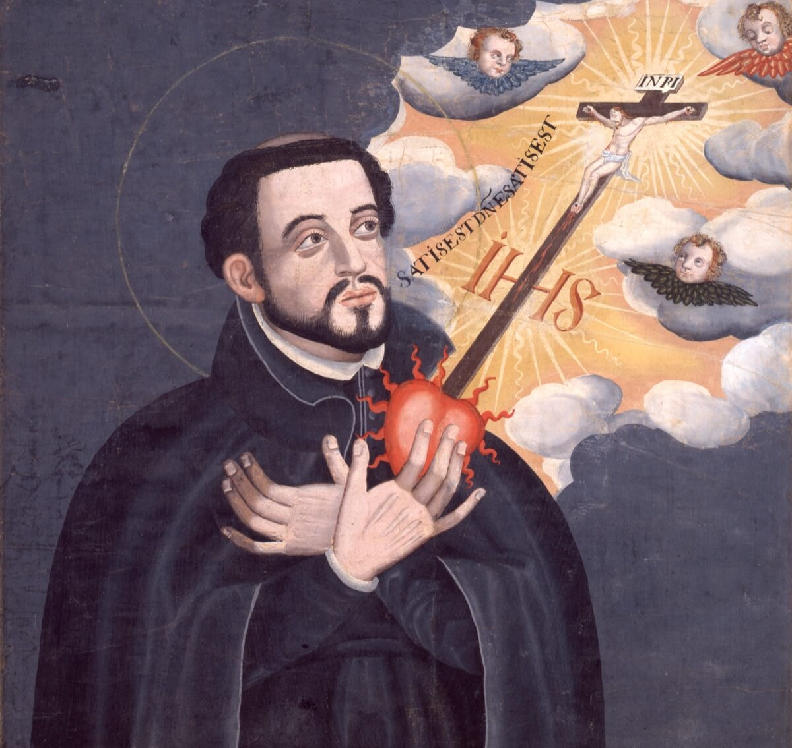
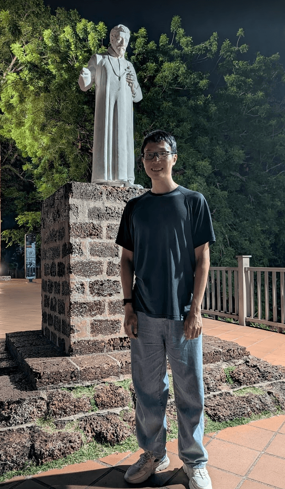
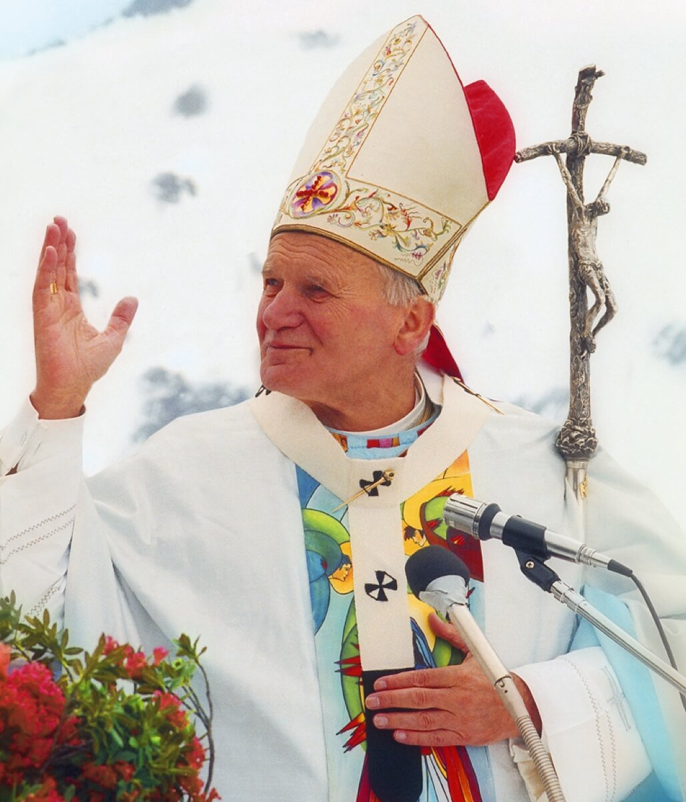
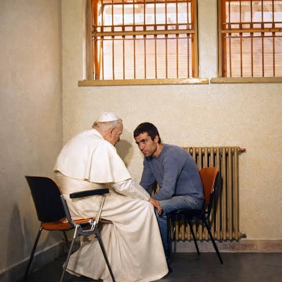

L8, St Joseph B.T.
If your friends ask what you actually do at church on Sundays, what would you say?
Pray · Homily · Eucharist
…and then we are sent out
Missio = Mission
We gather to receive — we leave to share
Isn’t faith a private thing between me and God?
God is Love, Truth, Beauty
Truth believed compels us to share love
“Faith comes from what is heard… No one can proclaim the Gospel to himself. Grace must be offered and received through mission.”
CCC 875 / Romans 10:14–17
“Today too, people prefer to listen to witnesses: they thirst for authenticity and call for evangelizers to speak of a God whom they themselves know.”
Evangelii Gaudium 150
Do I need to be an expert in arguments to evangelize?
Not apologetics
Plant seeds of love — not debates
My (or ... Our?) grandma
No arguments — only faithful prayers. They planted God in me
You scatter the seed
God gives the growth — Mark 4:26–29
Are we trying to force or pressure people into believing?
Invitation, never coercion
Mother Teresa
Served the dying and poor in pure love — their freedom fully respected

What if I don’t have an epic conversion story of my own?
No personal epic needed
Share what inspires you in God’s work in others

miracolieucaristici.org
Carlo Acutis
Retold Eucharistic miracles online — his passion spoke

Does my faith story have to be happy and blissful?
Real faith limps
Struggle belongs to the journey
Jacob
Wrestled with God — walked away with a limp · Genesis 32

Will I get to see the results of sharing my faith?
The ripple outlives you
Results reach far beyond your lifetime
St. Francis Xavier
A legacy that continues centuries later


Where St. Francis Xavier is honored
What if God asks you to share love with an enemy or someone who hurt you?
Strongest when you least feel it
St. Thérèse, age 14
Prayed for a criminal’s conversion — he repented before his execution
St. John Paul II
Visited his assassin in prison — and forgave him


Before
“There was a time I felt…”
Encounter
“Then I experienced God through…”
After
“Now, my faith helps me to…”
Images via Wikimedia Commons — Mother Teresa: Kingkongphoto & www.celebrity-photos.com (CC BY-SA 2.0) · Carlo Acutis relief: AndyScott (CC BY-SA 4.0) · St Thérèse: Céline Martin (PD) · St Francis Xavier (PD) · Jacob: Rembrandt (PD) · John Paul II: D. Gregorini (CC BY-SA 3.0)